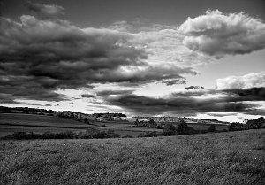

The intense interest aroused in the public by what was known at the time as "The Styles Case" has now somewhat subsided. Nevertheless, in view of the world-wide notoriety which attended it, I have been asked, both by my friend Poirot and the family themselves, to write an account of the whole story. This, we trust, will effectually silence the sensational rumours which still persist.
I will therefore briefly set down the circumstances which led to my being connected with the affair.
I had been invalided home from the Front; and, after spending some months in a rather depressing Convalescent Home, was given a month's sick leave. Having no near relations or friends, I was trying to make up my mind what to do, when I ran across John Cavendish. I had seen very little of him for some years. Indeed, I had never known him particularly well. He was a good fifteen years my senior, for one thing, though he hardly looked his forty-five years.